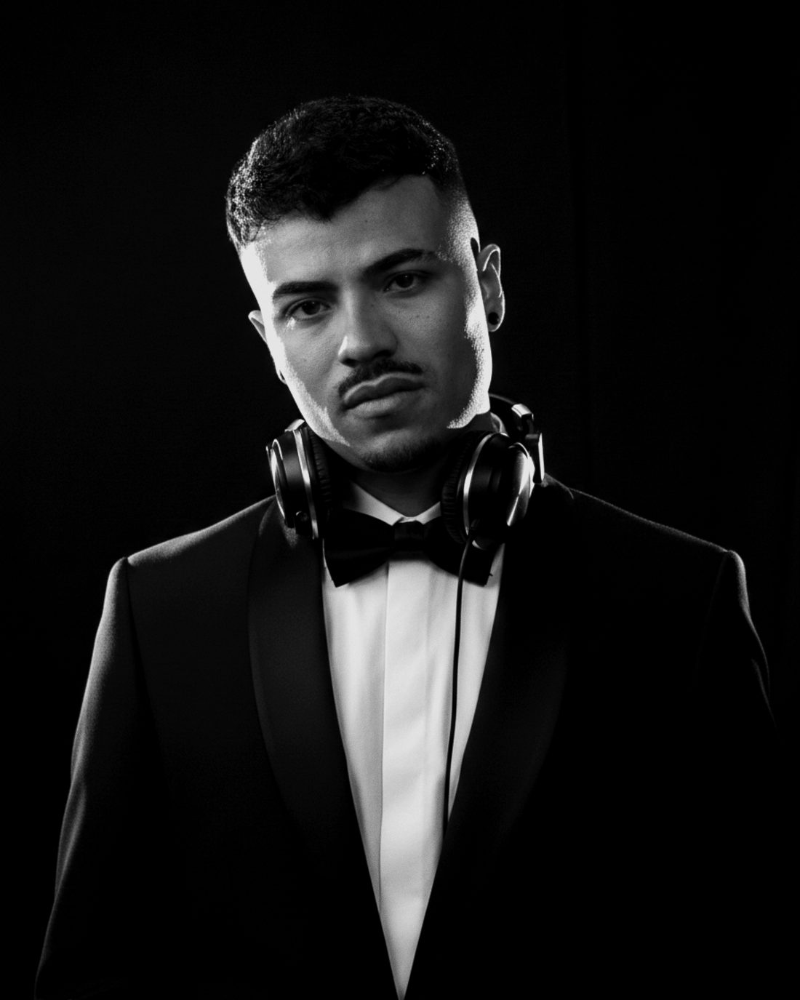

The orange-grove finca and alquería
The signature Valencian wedding: a restored alquería or finca set among the orange groves of the Horta and the inland valleys. They are beautiful, open-air, and almost always bound by a strict outdoor sound curfew. A DJ who only plays club sets will struggle here. The room wants a warm, organic build through dinner and the judgement to time the energy around the cut-off rather than fight it.
Costa Blanca beach and coastal venues
From the Valencia beachfront down through Dénia, Jávea and Altea, the coast is lined with venues built for golden-hour ceremonies and long Mediterranean nights. They invite a lighter, balearic feel at sunset and a deeper groove after dark. The DJ has to carry one set through dramatic shifts in light, temperature and crowd energy.
Albufera and rice-field settings
Just south of the city, the Albufera lagoon and its rice fields give you a uniquely Valencian backdrop: wide horizons, water, and the kind of sunset people fly in for. These nature-led venues are usually remote, so power, outdoor-ready equipment and a self-sufficient setup matter as much as the music itself.

City and modernista venues
Valencia's historic centre, its modernista buildings and the spaces around the Ciudad de las Artes y las Ciencias are where the design-led, urban wedding happens. Tighter rooms, stricter sound limits and a cosmopolitan crowd that has travelled for something with a point of view. This is where precise control and a confident, contemporary selection matter most.
How we match DJ to venue
- We know the difference between an orange-grove curfew and a coastal venue that runs late, and we plan the set around it
- We know which venues need fully outdoor-ready, self-powered equipment and which have a club system in place
- We know the local curfews, the load-in access and the typical Valencian timeline, where dinner runs long and the floor opens later
- We assign the DJ whose style and kit suit your specific venue, not the first one available
Ready to find the right DJ for your Valencia wedding?
Start the matching →